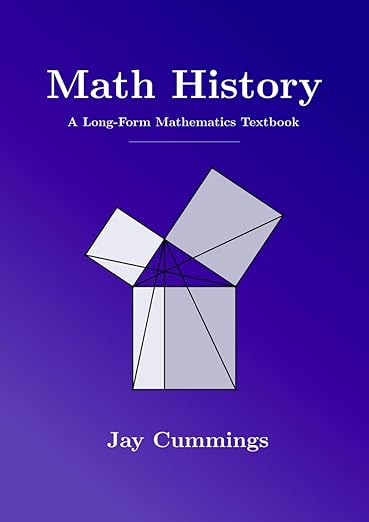

Math History
In high school, I wondered why only the ancient Greeks seemed to study mathematics.
I wondered why my ancestors, ancient Burmese, were not doing math.
After reading the history of mathematics, I realize that people from all over the world did the math.
Mathematics is a universal human endeavor. It cannot be attributed to a single civilization or culture. With that said, the author notes that geography and culture shape mathematical progress.
I just want to use the quote from the book: "Trading with people forced them to break out of their bubble, see other ways one can live, meet new people and exchange ideas."
Regions active in trade were likelier to advance mathematics. Cultures that welcomed open debate and diverse thought were crucial.
Talent is universal but opportunities are not.
So I owe my ancestors an apology for assuming they did not study mathematics. I was dumb. There must be people pursuing mathematics but they might get ridiculed or not recognized.
I strongly recommend this book. I hope it will open your eyes like it did for me. Amazon